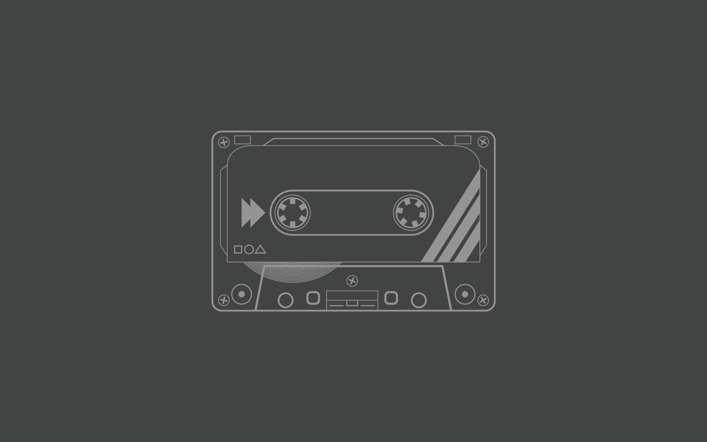

HOME
CHAPTER 3
CHAPTER 3.1
CHAPTER 3.2
CHAPTER 3.3
CHAPTER 4
CHAPTER 3 ICT IGCSE
Chapter 3 is specifically focused on
Storage Devices and Media
This Chapter will cover:
3.1 Backing Up of Data
3.2 Types of Access
3.3 Secondary Storage Media
